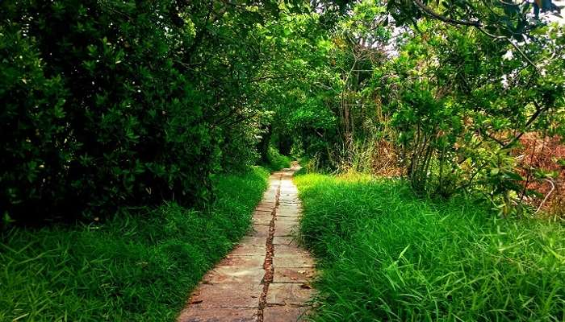
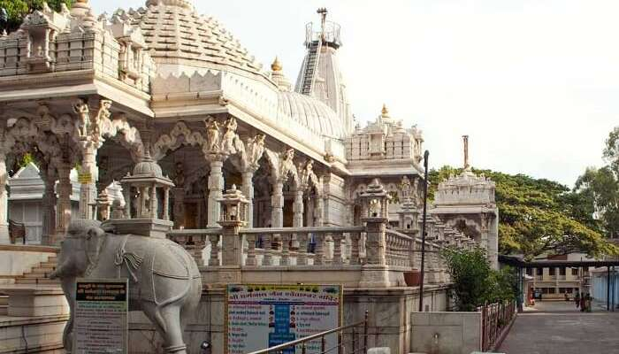
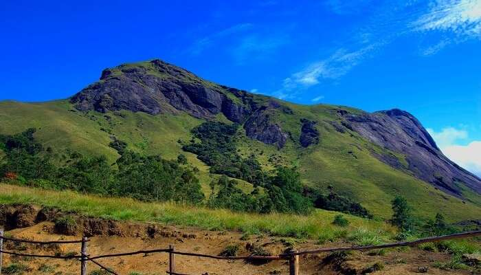
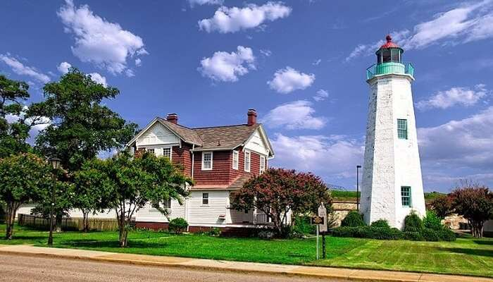
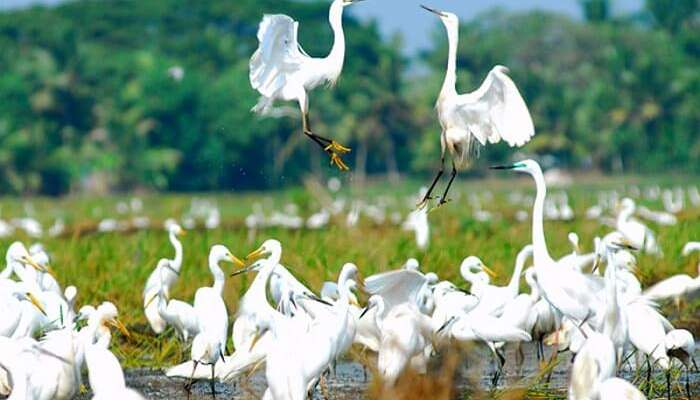
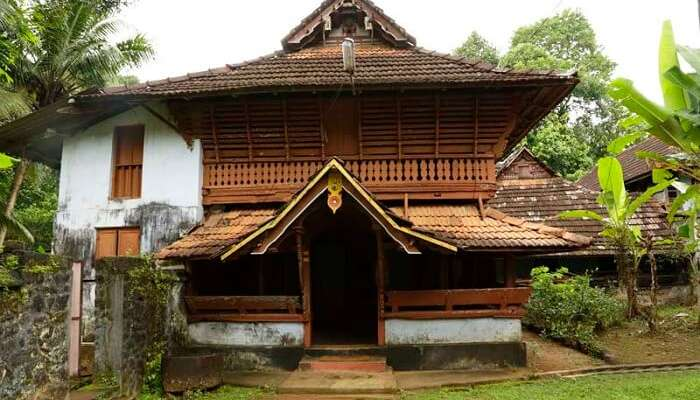
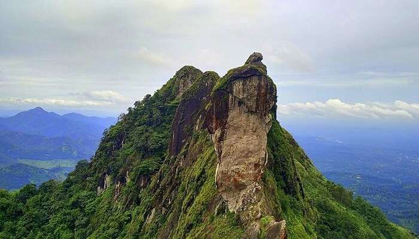

1. Vaikom

2. Nadukani

3. Island Of Pathiramanal

4. Nattakom & Panachikkad

5. Kottathavalam

6. Marmala Waterfalls

7. Monroe Lighthouse

8. Kumarakom Bird Sanctuary

9.Poonjar Palace

10.Illikkal Kallu


Kottayam is a city in the Indian state of Kerala. It is located in central Kerala and is also the administrative capital of Kottayam district. Bordered by the lofty and mighty Western Ghats on the east and the Vembanad Lake and paddy fields of Kuttanad on the west, Kottayam is a land of unique characteristics. Panoramic backwater stretches, lush paddy fields, highlands, hills and hillocks, extensive rubber plantations, places associated with many legends and a totally literate people have given Kottayam District the enviable title: The land of letters, legends, latex and lakes. The city is an important trading center of spices and commercial crops, especially rubber. Most of India’s natural rubber originates from the acres of well-kept plantations of Kottayam, also home to the Rubber Board. Kottayam is also called as “Akshara Nagari” which means the “city of letters” considering its contribution to print media and literature.